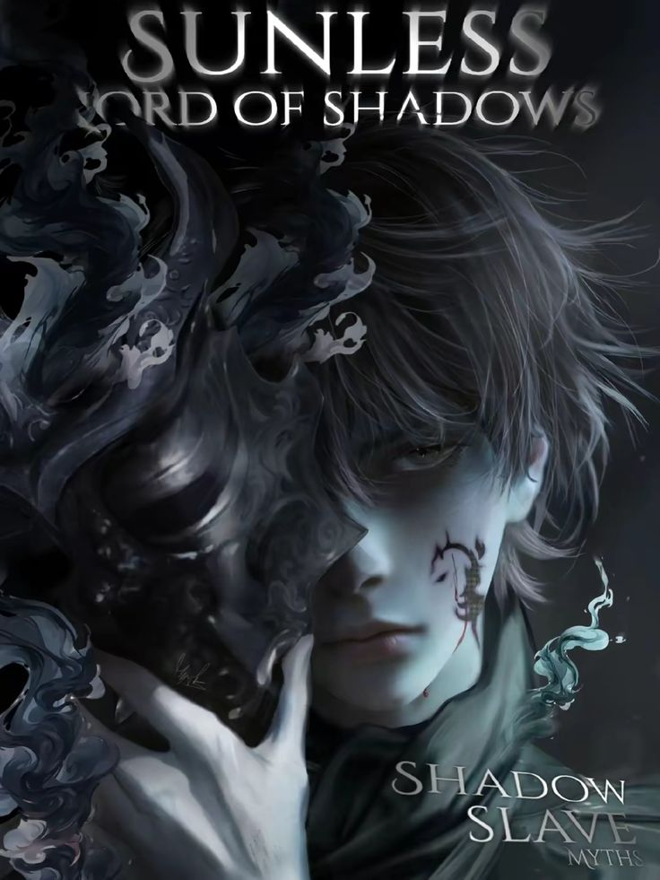

Identidade Central
Nome: Sunless
Nome Verdadeiro: Perdido da Luz
Classificação Existencial
Rank: Soberano
Classe: Titã
Núcleos de Sombras: [7/7]
Fragmentos de Sombra[7000/7000]
Atributos de Linhagem
Atributos Primários: [Lorde das Sombras], [Mestre das Sombras], [Concha de Ônix], [Chama do Destino], [Chama da Divindade]
Legado de Aspecto
Estilo Avançado: [Dança das Sombras - Nível Máximo]
Memórias Vinculadas
Arsenal Ativo: [Sino de Prata], [Pedra Extraórdinaria], [Primavera Eterna], [Máscara do Tecelão], [Lanterna das Sombras] [Agulha do Tecelão] [Manto Nebuloso]